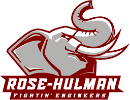
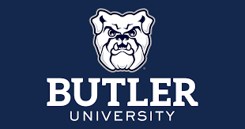
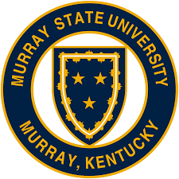

| Number |
College Name |
Image |
Why |
| 1
| Rose Hulman
|  |
Rose is number one because it has a really good computer science program
and it's a private school so it looks really good on resumes.
|
| 2 |
USI |
 |
USI is much more affordable and realistic for me, it's also close to home. |
| 3 |
Wabash |
|
Wabash has a really high percetage of alumni that get a job right out of college |
| 4 |
Butler |
 |
It's a private college that will look good on resumes, it also has some clubs I'm interested in. |
| 5 |
IU |
|
IU probably doesn't have the best Computer Science program but I would enjoy getting to see the basketball games |
| 6 |
Ball State |
|
It has a Computer Science program, also a few people in my family went there. |
| 7 |
Purdue Polytechnic |
|
You can major in Game Development and Design which might be a path I consider taking |
| 8 |
Murray State |
 |
It would be a great choice if I wanted to go into Cybersecurity |
| 9 |
Vincennes |
 |
If I decide to a more expensive college like Rose I may want to consider going to a community college just to get some unnecessary classes out of the way and save money |
| 10 |
IvyTech |
|
Ivy IvyTech would be another option for getting cheaper credits but it's farther from home |